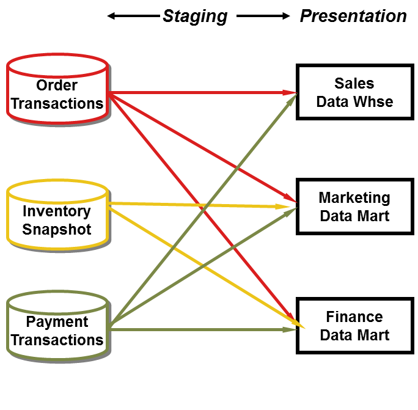
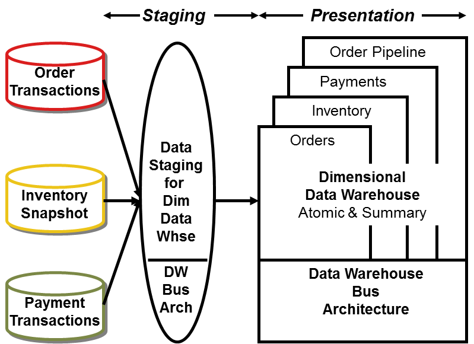
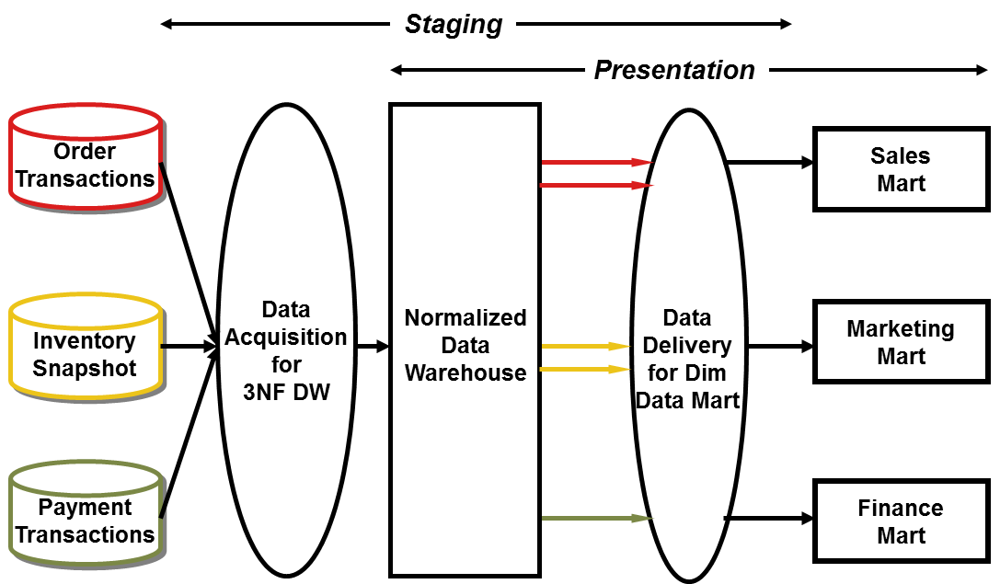
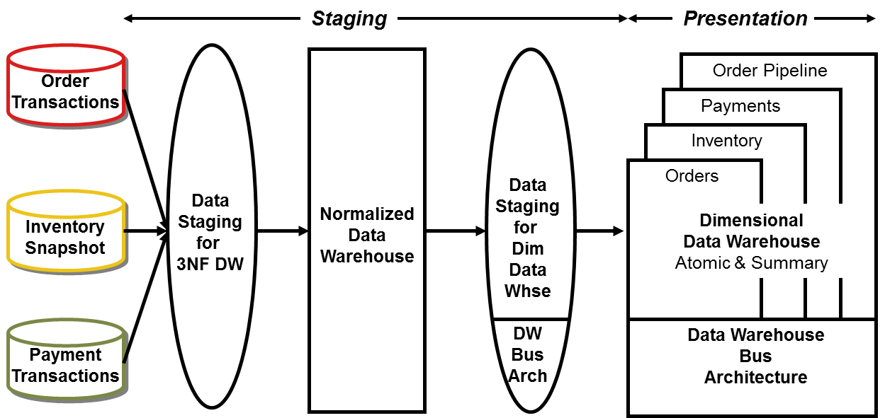

The Kimball bus architecture and the Corporate Information Factory: What are the fundamental differences?
Based on recent inquiries, many of you are in the midst of architecting (or rearchitecting) your data warehouse. There’s no dispute that planning your data warehouse from an enterprise perspective is a good idea, but do you need an enterprise data warehouse? It depends on your definition. In this column, we’ll clarify the similarities and differences between the two dominant approaches to enterprise warehousing.
Common Ground
We all agree on some things related to data warehousing. First, at the most rudimentary level, nearly all organizations benefit from creating a data warehouse and analytic environment to support decision-making. Maybe it’s like asking your barber if you need a haircut, but personal bias aside, businesses profit from well-implemented data warehouses. No one would attempt to run a business without operational processes and systems in place. Likewise, complementary analytic processes and systems are needed to leverage the operational foundation.
Second, the goal of any data warehouse environment is to publish the “right” data and make it easily accessible to decision makers. The two primary components of this environment are staging and presentation. The staging (or acquisition) area consists of extract-transform-load (ETL) processes and support. Once the data is properly prepared, it is loaded into the presentation (or delivery) area where a variety of query, reporting, business intelligence, and analytic applications are used to probe, analyze, and present data in endless combinations.
Both approaches agree that it’s prudent to embrace the enterprise vantage point when architecting the data warehouse environment for long-term integration and extensibility. Although subsets of the data warehouse will be implemented in phases over time, it’s beneficial to begin with the integrated end goal in mind during planning.
Finally, standalone data marts or warehouses in Figure 1 are problematic. These independent silos are built to satisfy specific needs, without regard to other existing or planned analytic data. They tend to be departmental in nature, often loosely dimensionally structured. Although often perceived as the path of least resistance because no coordination is required, the independent approach is unsustainable in the long run. Multiple, uncoordinated extracts from the same operational sources are inefficient and wasteful. They generate similar, but different variations with inconsistent naming conventions and business rules. The conflicting results cause confusion, rework and reconciliation. In the end, decision-making based on independent data is often clouded by fear, uncertainty, and doubt.
 
Figure 1Â Independent data marts/warehouses.
So we all see eye to eye on some matters. Before turning to our differences of opinion, we’ll review the two dominant approaches to enterprise data warehousing.
Kimball Bus Architecture
If you’ve been regularly reading the last 100 or so columns, you’re familiar with the Kimball approach in Figure 2. As we described in our last column “Data Warehouse Dining Experience” (Jan. 1, 2004), raw data is transformed into presentable information in the staging area, ever mindful of throughput and quality. Staging begins with coordinated extracts from the operational source systems. Some staging “kitchen” activities are centralized, such as maintenance and storage of common reference data, while others may be distributed.

Figure 2Â Dimensional data warehouse.
The presentation area is dimensionally structured, whether centralized or distributed. A dimensional model contains the same information as a normalized model, but packages it for ease-of-use and query performance. It includes both atomic detail and summarized information (aggregates in relational tables or multidimensional cubes) as required for performance or geographic distribution of the data. Queries descend to progressively lower levels of detail, without reprogramming by the user or application designer.
Dimensional models are built by business process (corresponding to a business measurement or event), not business departments. For example, orders data is populated once in the dimensional data warehouse for enterprise access, rather than being replicated in three departmental marts for marketing, sales, and finance. Once foundation business processes are available in the warehouse, consolidated dimensional models deliver cross-process metrics. The enterprise data warehouse bus matrix identifies and enforces the relationships between business process metrics (facts) and descriptive attributes (dimensions).
Corporate Information Factory
Figure 3Â illustrates the Corporate Information Factory (CIF) approach, once known as the EDW approach. Like the Kimball approach, there are coordinated extracts from the source systems. From there, a third normal form (3NF) relational database containing atomic data is loaded. This normalized data warehouse is used to populate additional presentation data repositories, including special-purpose warehouses for exploration and data mining, as well as data marts.

Figure 3Â Normalized data warehouse with summary dimensional marts (CIF).
In this scenario, the marts are tailored by business department/function with dimensionally structured summary data. Atomic data is accessible via the normalized data warehouse. Obviously, the atomic data is structured very differently from summarized information.
Fundamental Differences
There are two fundamental differentiators between the CIF and Kimball approaches. The first concerns the need for a normalized data structure before loading the dimensional models. Although this is a requisite underpinning of the CIF, the Kimball approach says the data structures required prior to dimensional presentation depend on the source data realities, target data model, and anticipated transformation. Although we don’t advocate centrally normalizing the atomic data prior to loading the dimensional targets, we don’t absolutely admonish it, presuming there’s a real need, financial willpower (for both the redundant ETL development and data storage), and clear understanding of the two-step throughput.
In the vast majority of the cases, we find duplicative storage of core performance measurement data in both normalized and dimensional structures is unwarranted. Advocates of the normalized data structures claim it’s faster to load than the dimensional model, but what sort of optimization is really achieved if the data needs to undergo ETL multiple times before being presented to the business?
The second primary difference between the two approaches is the treatment of atomic data. The CIF says atomic data should be stored in the normalized data warehouse. The Kimball approach says atomic data must be dimensionally structured. Of course, if you only provide summary information in a dimensional structure, you’ve “presupposed the questions.” However, if you make atomic data available in dimensional structures, you always have the ability to summarize the data “any which way.” We need the most finely grained data in our presentation area so that users can ask the most precise questions possible.
Business users may not care about the details of a single atomic transaction, but we can’t predict the ways they’ll want to summarize the transaction activity (perhaps for all customers of a certain type living in a range of ZIP codes that have been customers for more than two years). Anyone that’s worked side by side with a business analyst knows the questions asked are unpredictable and constantly changing. Details must be available so that they can be rolled up to answer the questions of the moment, without encountering a totally different data structure. Storing the atomic data in dimensional structures delivers this fundamental capability. If only summary data is dimensional with the atomic data stored in normalized structures, then drilling into the details is often akin to running into a brick wall. Skilled professionals must intervene because the underlying data structures are so different.
Both approaches advocate enterprise data coordination and integration, but the implementations differ. CIF says the normalized data warehouse fills this role. While normalized models communicate data relationships, they don’t inherently apply any pressure to resolve data integration issues. Normalization alone doesn’t begin to address the common data keys and labels required for integration.
From the earliest planning activities, the Kimball approach uses the enterprise data warehouse bus architecture with common, conformed dimensions for integration and drill-across support. Common, conformed dimensions have consistent descriptive attribute names, values, and meanings. Likewise, conformed facts are consistently defined; if they don’t use consistent business rules, then they’re given a distinct name.
Conformed dimensions are the backbone of any enterprise approach as they provide the integration “glue.” We’ve provided detailed design and implementation guidance regarding conformed dimensions in our books and columns. Conformed dimensions are typically built and maintained as central persistent master data in the staging area, then reused across the enterprise’s presentation marts and warehouses to ensure data integration and semantic consistency. It may not be practical or useful to get everyone to agree to everything related to a dimension; however, conformity directly correlates to an organization’s ability to integrate business results. Without conformity, you end up with isolated data that cannot be tied together. This situation perpetuates incompatible views of the enterprise, diverting attention to data inconsistencies and reconciliations while degrading the organization’s decision-making ability.
Hybrid Approach?
Some organizations adopt a hybrid approach, theoretically marrying the best of both the CIF and Kimball methods. As shown in Figure 4, the hybrid combines Figure 1 and 2. There’s a normalized data warehouse from the CIF, plus a dimensional data warehouse of atomic and summary data based on the Kimball bus architecture.

Figure 4Â Hybrid of normalized data warehouse and dimensional data warehouse.
Given the final presentation deliverable, this approach is viable. However, there are significant incremental costs and time lags associated with staging and storing atomic data redundantly. If you’re starting with a fresh slate and appreciate the importance of presenting atomic data to avoid presupposing the business questions, then why would you want to ETL, store, and maintain the atomic details twice? Isn’t the value proposition more compelling to focus the investment in resources and technology into appropriately publishing additional key performance metrics for the business?
Of course, if you have already built a normalized data warehouse and now recognize the need for robust presentation capabilities to deliver value, then the hybrid approach lets you leverage your preexisting investment.
Success Criteria
When evaluating approaches, people often focus strictly on IT’s perception of success, but it must be balanced with the business’ perspective. We agree that data warehouses should deliver a flexible, scalable, integrated, granular, accurate, complete, and consistent environment; however, if it’s not being leveraged by the business for decision-making, then it’s impossible to declare it successful. Does the business community use the data warehouse? Is it understandable to them (including nontechnical users)? Does it answer their business questions? Is the performance acceptable from their vantage point?
In our opinion, the success of any data warehouse is measured by the business’s acceptance of the analytic environment and their benefits realized from it. You should choose the data warehouse architecture that best supports these success criteria, regardless of the label.